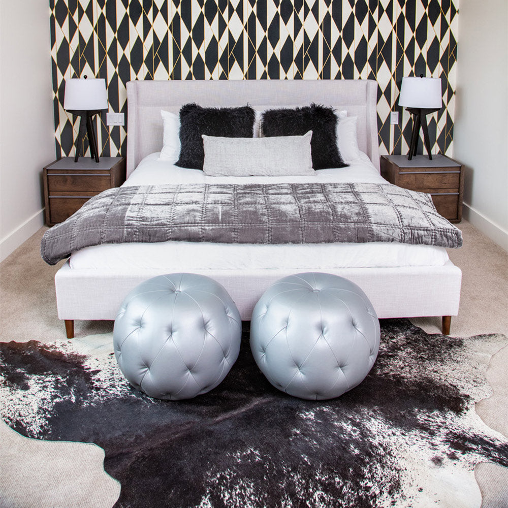
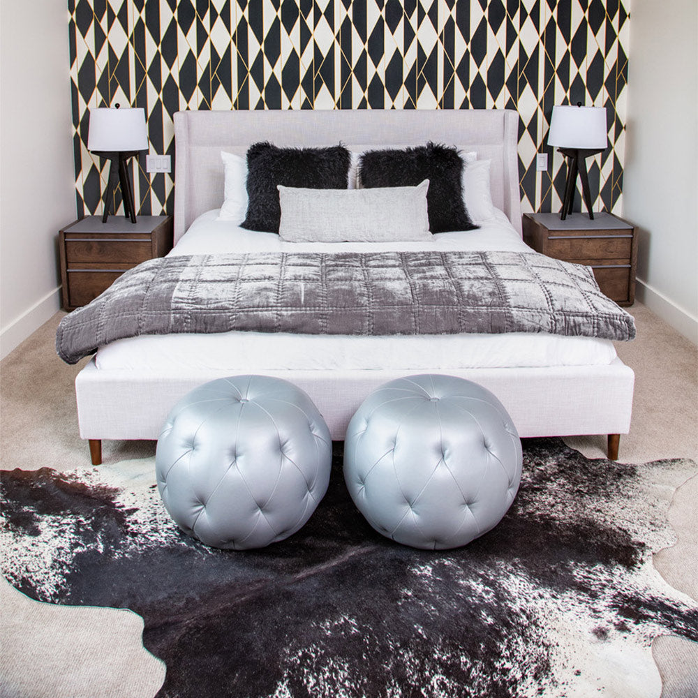
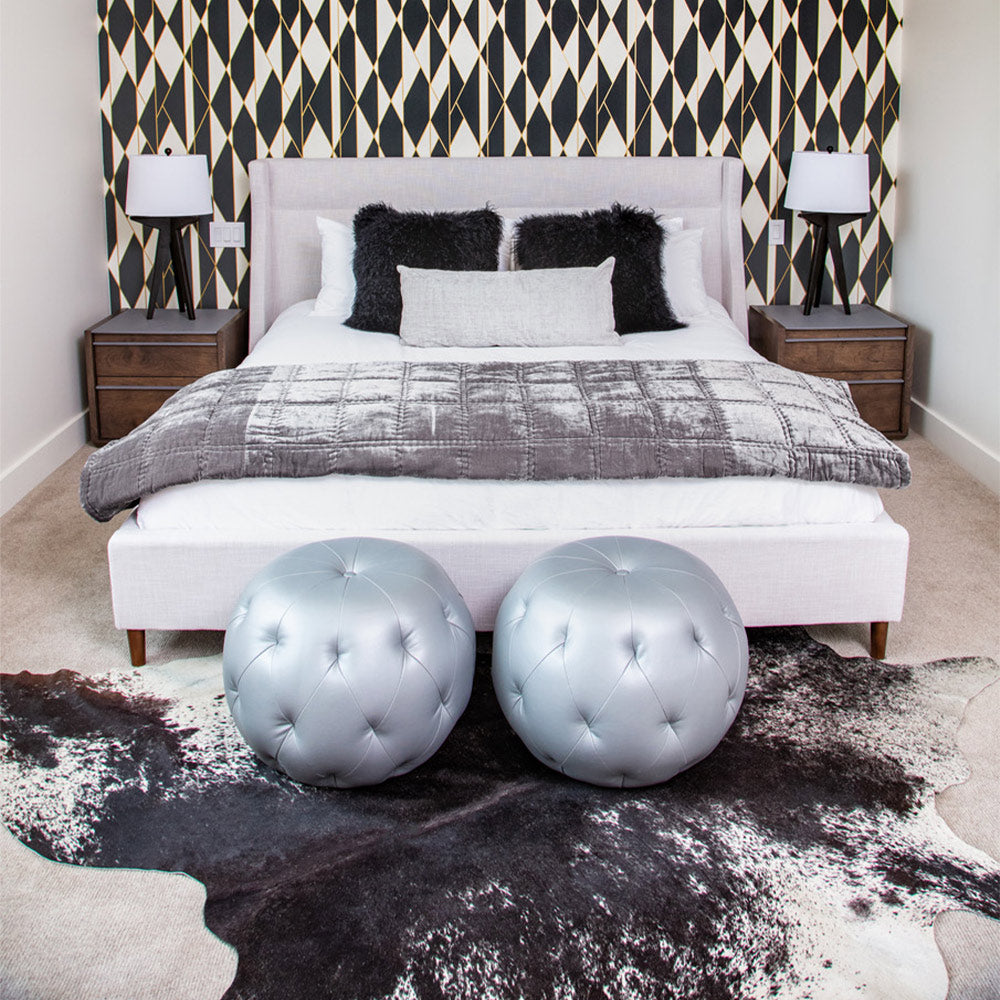

Transform your Burbank home with JAC Interiors' expert interior design services. Creating beautiful spaces that reflect the unique character of Burbank.

If you know Burbank, you know it hums with old Hollywood charm and forward-thinking creatives. From the iconic Warner Bros. Studios to the leafy residential enclaves near Magnolia Park or along Kenneth Road, this city blends classic California architecture with eclectic, evolving design tastes—and we absolutely love every bit of it.
At JAC Interiors, we bring our curated, collaborative approach to Burbank homes and boutique commercial spaces, crafting relaxed yet luxurious interiors that reflect the laid-back California lifestyle with just the right amount of glam. We’re your local design insiders with national recognition—20-time Best of Houzz winners, featured on HGTV and Oprah’s OWN—but we keep our roots grounded in neighborhoods like the Rancho District and the flats below the Verdugos.
Whether you’ve just landed your dream Craftsman in the Media District or you’re ready to reimagine your mid-century in Hillside District, JAC Interiors brings the transformative power of design to your doorstep with warmth, precision, and a whole lot of personality.
We offer full-service interior design and design-build solutions tailored to every phase of your project, including:
Our Rebuild LA Program is also available in Burbank, providing design-focused solutions for homeowners rebuilding after wildfire or weather-related events.
View all ourdesign services →
We treat Burbank as more than a service area—it’s a muse. The diverse architecture here, from traditional Spanish-style bungalows to classic Ranch remodels, presents some of our favorite design opportunities. We’re not a formulaic firm—we tailor every design and finish selection to you, your lifestyle, and your home’s unique bones.
Natural light is everything in SoCal, and we know how to capture it. We balance bold design interpretation with practical choices for your climate—whether it's selecting the right solar-shielding window treatments for homes facing west toward the Burbank Hills or choosing upholstery that stands up to studio kids and little pups sprinting through the den.
From securing permits in City Hall to collaborating with local millwork artisans, we work with seasoned vendors and contractors who understand the nuances of designing in this region. (Is your hillside home in need of seismic retrofitting? We've got you.)
A lot of Burbank properties have history, and we’re here for it. Whether you’re enhancing your 1920s Tudor details or opening up a 1960s post-and-beam, we design with an eye toward architectural integrity and thoughtful reinvention.
With our talented team—including CAD engineer Rammy Taing and our visionary co-founders Andrea Putman and Timothy Mersman from Otis School of Art and Design—you’ll experience a design journey that’s immersive, inspiring, and impeccably organized.
Designing in Burbank means access to a creative and resourceful design community. Here’s where we love to source:
Want to see how it all comes together? Check out ourProjects page →
Our team understands the neighborhood-driven vibes across greater Burbank. We’ve worked in and around:
Explore more areas we serve →Cities We Serve
For a community like Burbank, known for its creative energy, family-friendly neighborhoods, and a lifestyle that values both artistic expression and suburban comfort, JAC Interiors draws inspiration from projects that are both unique and highly functional. Our portfolio showcases a mastery of transforming residences into bespoke sanctuaries, a key element of Burbank interior design.
Our comprehensive design approach, from materials selection to bespoke furnishings, is why JAC Interiors is the trusted partner for transforming homes throughout the greater Los Angeles area, including the beautiful community of Burbank.
View all projects
Whether you're refreshing a single room, renovating your entire home, or dreaming big with a new build, the JAC Interiors team is ready to bring your Burbank vision to life. Tell us what you love, what drives you crazy in your space, and what you imagine when you think of "home".
We’ll handle the rest—beautifully.
Contact JAC Interiors today for a consultation. Let's create a beautiful space you'll love.
Get in Touch